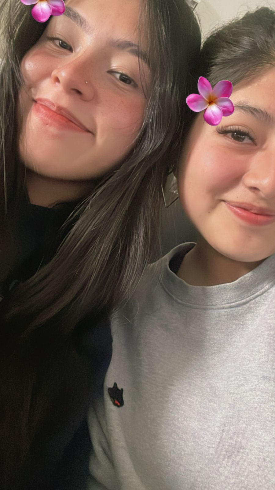
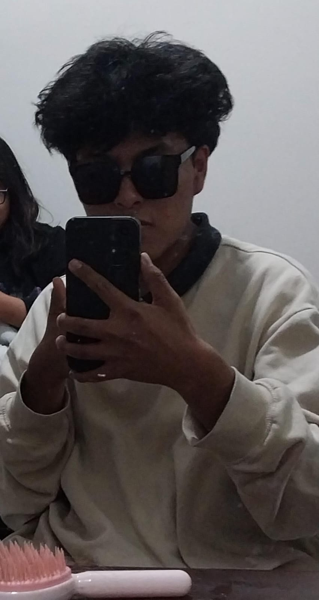
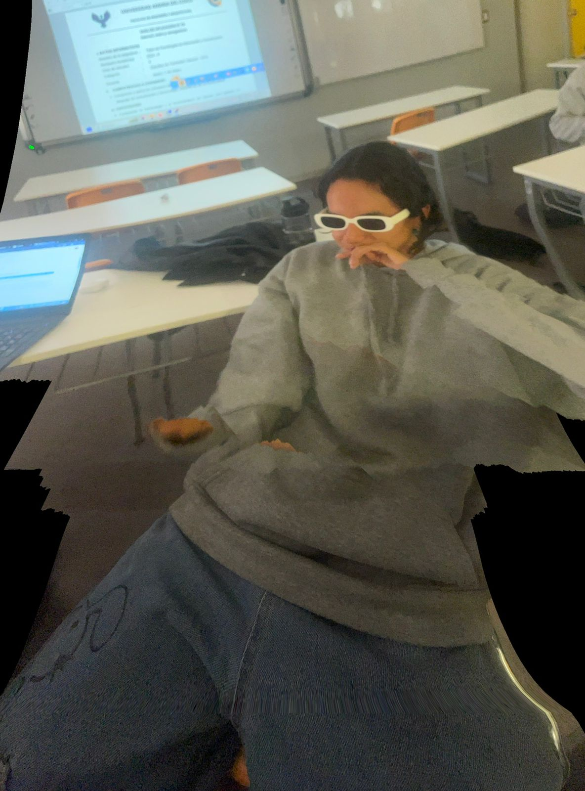
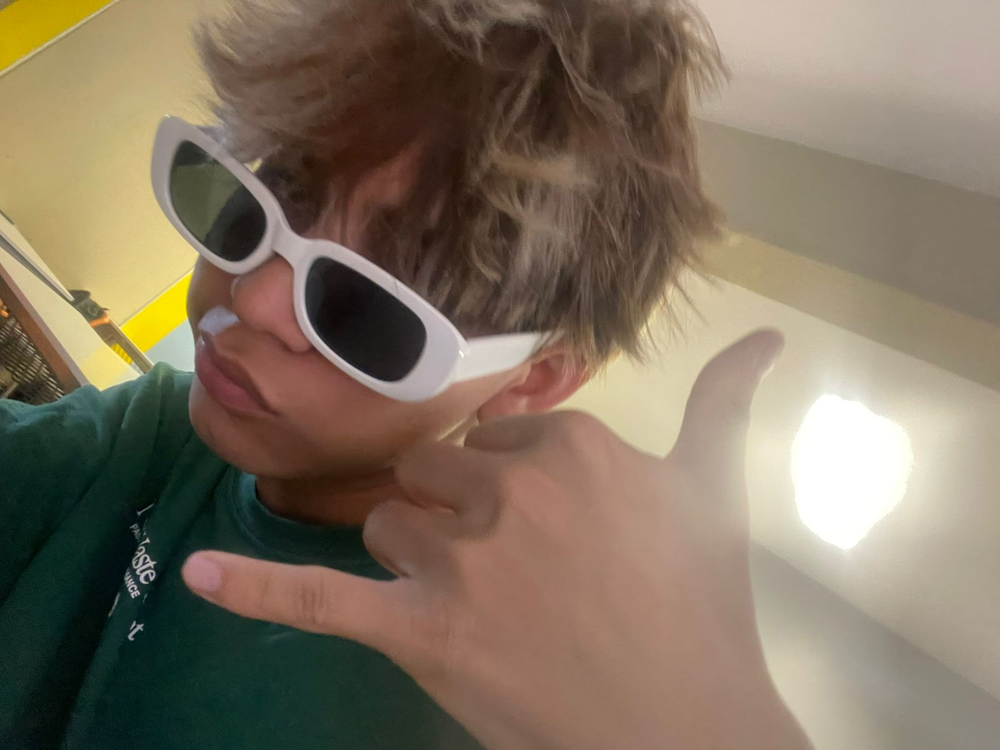

¡Hola mundo, les presento nuestra primera pagina web!
Somos del grupo fumanchu
Y somos de la Universidad Andina del Cusco
Nuestro grupo está conformado por:
- Ayala Olivares Melania Mia
- Alcázar Fernández Brigite Getsiba
- Rimachi Duran Joaquin Andre
- Illa Naomi Guardpuclla Carpio
- Illatopa Ramirez Shuer Said



